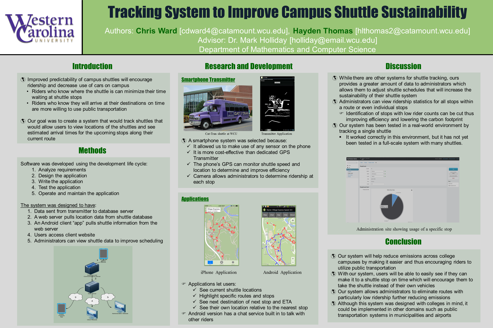

Capstone -> TranTracker
Seriously though, where's the shuttle?
In a campus environment, being on time is key. Students, professors, and administrators are required to attend meetings and show up to classes on time. This is nearly impossible if using a campus shuttle, unless you know where the shuttle is, and how long it will take to get to your destination. With our project, we envision creating an application to help aid in the efficiency of shuttle usage. We can help administrators find issues with shuttle routes that would not be apparent by just polling passengers. We could collect administrative data, such as average times between stops, which stops have the most ridership, and on-time percentages against the time intervals advertised.
{kind=link}
Poster for TranTracker, winning the poster competition, and presented at Appalachian Energy Summit 2014 focusing on campus sustainability.
So, how does it work?
TranTracker is made up of three major components:
The Android-based tracking application sends the current location, speed, and driver information in a 3 second interval to the database server. Users may use any of the client applications to connect and view the current status of each shuttle on the system, along with their estimated time of arrival and name of the nearest shuttle stop. Administrators may find the administration panel useful, as data are collected from each shuttle stop, and are presented in various charts showing on-time percentages for each shuttle, and amount of people entering/exiting a shuttle at each shuttle stop.
Setup is fairly straightforward. Go to the administration panel for TranTracker through the website, and add each route, driver, and shuttle that's required. Next install the Android tracking application onto an android phone, select which route the shuttle will be running, and the current driver.
Conferences Presented:
TranTracker has been presented at the following conferences. If there is an abstract available, click the name of the conference to view.
{kind=link}
Presenting the TranTracker poster at Appalachian Energy Summit.